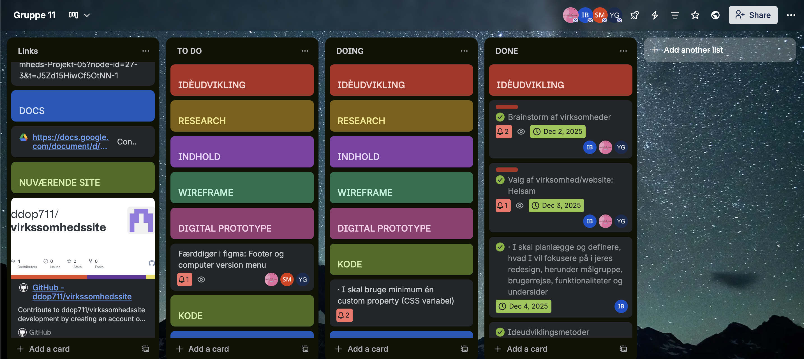
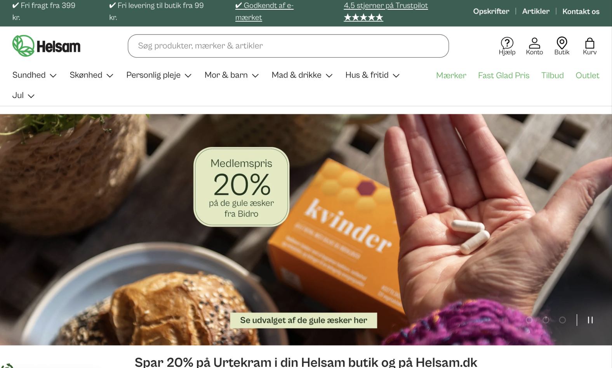

Tema 5 - Grundlæggende indhold
Til at starte med under Tema 5, havde vi en lille
”hygge-uge” hvor vi igen skulle lave en lille video, som i Tema 1.
Formålet med videoen var at fortælle en lille historie ud fra video, lyd og billeder, med en
eller anden ting i centrum.
Vi valgte et papirfly.

Nu til den rigtige opgave i Tema 5, som gik ud
på at finde en virksomhed og redesigne deres hjemmeside. Op indtil nu har
vi stort set kun arbejdet individuelt med vores egne individuelle sider, men denne gang blev vi
sat i grupper hvor vi
sammen skulle arbejde om én fælles hjemmeside. I gruppen fik vi lavet gruppekontrakt, lagt en
plan ved hjælp af trello,
og også lært hvordan man bruger Github som et samarbejdsværktøj, og hvordan vi nemt deler den
samme fil.

Vi valgte at gå med Helsam, da
der ligger en tæt
på skolen, så det var nemt nok at komme i kontakt til dem, og derudover
syntes vi alle sammen at deres hjemmeside er grim, helt uoverskuelig, og på ingen måde er
brugervenlig.

Med vores endelige resultat, fik
vi simplificeret
og fjernet en masse støj fra den gamle Helsam hjemmeside. På måden vi
kom frem til resultatet var simpelt at bruge ALT det vi har lært ind til nu, altså både
planlægning,
research, idéudviklilng,
prototype, tests og så kode det endelige produkt.